Solve Mixture Applications with Systems of Equations
Solve Mixture Applications
When we solved mixture applications with coins and tickets earlier, we started by creating a table so we could organize the information. For a coin example with nickels and dimes, the table looked like this:
![This is a table with three rows and four columns. The first row of the table is a header row, and each cell names the column or columns below it. The first cell from the left is named “Type.” The second cell contains the equation “Number” times “Value” equals “Total Value,” with one column corresponding to “Number,” one column corresponding to “Value,” and one column corresponding to total value. Hence the content of the “Number” column times the content of the “Value” column equals the content of the “Total Value” column. In the second row of the table, the “Type” column contains “nickels,” the “Number” column is blank, the “Value” column contains 0.05, and the “Total Value” column is blank. In the third row of the table, the “Type” column contains “dimes,” the “Number” column is blank, the “Value column contains 0.10, and the “Total Value” column is blank.](../../media/CNX_ElemAlg_Figure_05_05_007_img_new.jpg)
Using one variable meant that we had to relate the number of nickels and the number of dimes. We had to decide if we were going to let n be the number of nickels and then write the number of dimes in terms of n, or if we would let d be the number of dimes and write the number of nickels in terms of d.
Now that we know how to solve systems of equations with two variables, we’ll just let n be the number of nickels and d be the number of dimes. We’ll write one equation based on the total value column, like we did before, and the other equation will come from the number column.
For the first example, we’ll do a ticket problem where the ticket prices are in whole dollars, so we won’t need to use decimals just yet.
Translate to a system of equations and solve:
The box office at a movie theater sold 147 tickets for the evening show, and receipts totaled $1,302. How many $11 adult and how many $8 child tickets were sold?
Solution
Solution
| Step 1. Read the problem. | We will create a table to organize the information. |
| Step 2. Identify what we are looking for. | We are looking for the number of adult tickets and the number of child tickets sold. |
| Step 3. Name what we are looking for. | Let the number of adult tickets. the number of child tickets |
| A table will help us organize the data. We have two types of tickets: adult and child. |
Write a and c for the number of tickets. |
| Write the total number of tickets sold at the bottom of the Number column. |
Altogether 147 were sold. |
| Write the value of each type of ticket in the Value column. |
The value of each adult ticket is $11. The value of each child tickets is $8. |
| The number times the value gives the total value, so the total value of adult tickets is , and the total value of child tickets is |
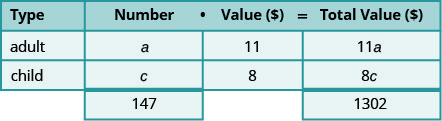 |
| Altogether the total value of the tickets was $1,302. |
Fill in the Total Value column. |
| Step 4. Translate into a system of equations. | |
| The Number column and the Total Value column give us the system of equations. We will use the elimination method to solve this system. |
|
| Multiply the first equation by −8. | |
| Simplify and add, then solve for a. | |
| Substitute a = 42 into the first equation, then solve for c. |
|
|
Step 5. Check the answer in the problem. 42 adult tickets at $11 per ticket makes $462 105 child tickets at $8 per ticket makes $840. The total receipts are $1,302.✓ |
|
| Step 6. Answer the question. | The movie theater sold 42 adult tickets and 105 child tickets. |
In Example 2 we’ll solve a coin problem. Now that we know how to work with systems of two variables, naming the variables in the ‘number’ column will be easy.
Translate to a system of equations and solve:
Priam has a collection of nickels and quarters, with a total value of $7.30. The number of nickels is six less than three times the number of quarters. How many nickels and how many quarters does he have?
Solution
Solution
| Step 1. Read the problem. | We will create a table to organize the information. |
| Step 2. Identify what we are looking for. | We are looking for the number of nickels and the number of quarters. |
| Step 3. Name what we are looking for. | Let the number of nickels. the number of quarters |
| A table will help us organize the data. We have two types of coins, nickels and quarters. |
Write n and q for the number of each type of coin. |
| Fill in the Value column with the value of each type of coin. |
The value of each nickel is $0.05. The value of each quarter is $0.25. |
| The number times the value gives the total value, so, the total value of the nickels is n (0.05) = 0.05n and the total value of quarters is q(0.25) = 0.25q. Altogether the total value of the coins is $7.30. |
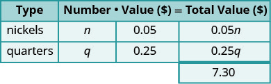 |
| Step 4. Translate into a system of equations. | |
| The Total value column gives one equation. | |
| We also know the number of nickels is six less than three times the number of quarters. Translate to get the second equation. |
|
| Now we have the system to solve. | |
|
Step 5. Solve the system of equations We will use the substitution method. Substitute n = 3q − 6 into the first equation. Simplify and solve for q. |
|
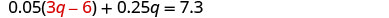 |
|
| To find the number of nickels, substitute q = 19 into the second equation. |
|
|
Step 6. Check the answer in the problem. |
|
| Step 7. Answer the question. | Priam has 19 quarters and 51 nickels. |
Some mixture applications involve combining foods or drinks. Example situations might include combining raisins and nuts to make a trail mix or using two types of coffee beans to make a blend.
Translate to a system of equations and solve:
Carson wants to make 20 pounds of trail mix using nuts and chocolate chips. His budget requires that the trail mix costs him $7.60 per pound. Nuts cost $9.00 per pound and chocolate chips cost $2.00 per pound. How many pounds of nuts and how many pounds of chocolate chips should he use?
Solution
Solution
| Step 1. Read the problem. | We will create a table to organize the information. |
| Step 2. Identify what we are looking for. | We are looking for the number of pounds of nuts and the number of pounds of chocolate chips. |
| Step 3. Name what we are looking for. | Let the number of pound of nuts. the number of pounds of chips |
| Carson will mix nuts and chocolate chips to get trail mix. Write in n and c for the number of pounds of nuts and chocolate chips. There will be 20 pounds of trail mix. Put the price per pound of each item in the Value column. Fill in the last column using |
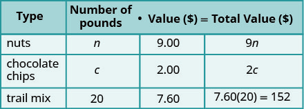 |
| Number · Value = Total Value | |
|
Step 4. Translate into a system of equations. We get the equations from the Number and Total Value columns. |
|
|
Step 5. Solve the system of equations We will use elimination to solve the system. |
|
| Multiply the first equation by −2 to eliminate c. | |
| Simplify and add. Solve for n. | |
| To find the number of pounds of chocolate chips, substitute n = 16 into the first equation, then solve for c. |
|
|
Step 6. Check the answer in the problem. |
|
| Step 7. Answer the question. | Carson should mix 16 pounds of nuts with 4 pounds of chocolate chips to create the trail mix. |
Another application of mixture problems relates to concentrated cleaning supplies, other chemicals, and mixed drinks. The concentration is given as a percent. For example, a 20% concentrated household cleanser means that 20% of the total amount is cleanser, and the rest is water. To make 35 ounces of a 20% concentration, you mix 7 ounces (20% of 35) of the cleanser with 28 ounces of water.
For these kinds of mixture problems, we’ll use percent instead of value for one of the columns in our table.
Translate to a system of equations and solve:
Sasheena is a lab assistant at her community college. She needs to make 200 milliliters of a 40% solution of sulfuric acid for a lab experiment. The lab has only 25% and 50% solutions in the storeroom. How much should she mix of the 25% and the 50% solutions to make the 40% solution?
Solution
Solution
| Step 1. Read the problem. | A figure may help us visualize the situation, then we will create a table to organize the information. |
| Sasheena must mix some of the 25% solution and some of the 50% solution together to get 200 ml of the 40% solution. |
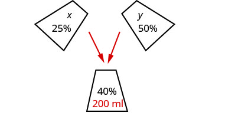 |
| Step 2. Identify what we are looking for. | We are looking for how much of each solution she needs. |
| Step 3. Name what we are looking for. | Let number of ml of 25% solution. number of ml of 50% solution |
| A table will help us organize the data. She will mix x ml of 25% with y ml of 50% to get 200 ml of 40% solution. We write the percents as decimals in the chart. We multiply the number of units times the concentration to get the total amount of sulfuric acid in each solution. |
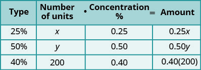 |
|
Step 4. Translate into a system of equations. We get the equations from the Number column and the Amount column. |
|
| Now we have the system. | |
|
Step 5. Solve the system of equations. We will solve the system by elimination. Multiply the first equation by −0.5 to eliminate y. |
|
| Simplify and add to solve for x. | 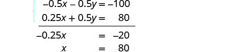 |
| To solve for y, substitute x = 80 into the first equation. |
|
|
Step 6. Check the answer in the problem. |
|
| Step 7. Answer the question. | Sasheena should mix 80 ml of the 25% solution with 120 ml of the 50% solution to get the 200 ml of the 40% solution. |
Solve Interest Applications
The formula to model interest applications is I = Prt. Interest, I, is the product of the principal, P, the rate, r, and the time, t. In our work here, we will calculate the interest earned in one year, so t will be 1.
We modify the column titles in the mixture table to show the formula for interest, as you’ll see in Example 5.
Translate to a system of equations and solve:
Adnan has $40,000 to invest and hopes to earn 7.1% interest per year. He will put some of the money into a stock fund that earns 8% per year and the rest into bonds that earns 3% per year. How much money should he put into each fund?
Solution
Solution
| Step 1. Read the problem. | A chart will help us organize the information. |
| Step 2. Identify what we are looking for. | We are looking for the amount to invest in each fund. |
| Step 3. Name what we are looking for. | Let the amount invested in stocks. the amount invested in bonds. |
| Write the interest rate as a decimal for each fund. Multiply: Principal · Rate · Time to get the Interest. |
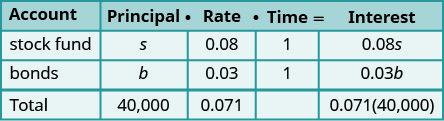 |
|
Step 4. Translate into a system of equations. We get our system of equations from the Principal column and the Interest column. |
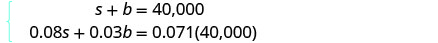 |
|
Step 5. Solve the system of equations Solve by elimination. Multiply the top equation by −0.03. |
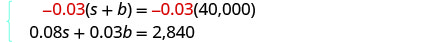 |
| Simplify and add to solve for s. | 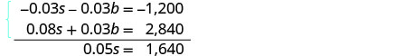 |
| To find b, substitute s = 32,800 into the first equation. |
|
| Step 6. Check the answer in the problem. | We leave the check to you. |
| Step 7. Answer the question. | Adnan should invest $32,800 in stock and $7,200 in bonds. |
Did you notice that the Principal column represents the total amount of money invested while the Interest column represents only the interest earned? Likewise, the first equation in our system, s + b = 40,000, represents the total amount of money invested and the second equation, 0.08s + 0.03b = 0.071(40,000), represents the interest earned.
Translate to a system of equations and solve:
Rosie owes $21,540 on her two student loans. The interest rate on her bank loan is 10.5% and the interest rate on the federal loan is 5.9%. The total amount of interest she paid last year was $1,669.68. What was the principal for each loan?
Solution
Solution
| Step 1. Read the problem. | A chart will help us organize the information. |
| Step 2. Identify what we are looking for. | We are looking for the principal of each loan. |
| Step 3. Name what we are looking for. | Let the principal for the bank loan. the principal on the federal loan |
| The total loans are $21,540. | |
| Record the interest rates as decimals in the chart. |
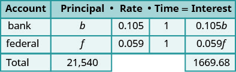 |
| Multiply using the formula l = Pr t to get the Interest. |
|
|
Step 4. Translate into a system of equations. The system of equations comes from the Principal column and the Interest column. |
|
|
Step 5. Solve the system of equations We will use substitution to solve. Solve the first equation for b. |
|
| Substitute b = −f + 21,540 into the second equation. |
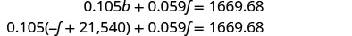 |
| Simplify and solve for f. | |
| To find b, substitute f = 12,870 into the first equation. |
|
|
Step 6. Check the answer in the problem. |
We leave the check to you. |
| Step 7. Answer the question. | The principal of the bank loan is $12,870 and the principal for the federal loan is $8,670. |
Key Concepts
-
Table for coin and mixture applications
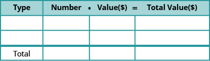
-
Table for concentration applications
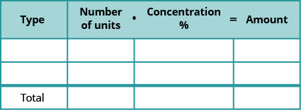
-
Table for interest applications
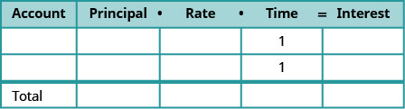
Practice Makes Perfect
Solve Mixture Applications
In the following exercises, translate to a system of equations and solve.
Tickets to a Broadway show cost $35 for adults and $15 for children. The total receipts for 1650 tickets at one performance were $47,150. How many adult and how many child tickets were sold?
Solution
There 1120 adult tickets and 530 child tickets sold.
Tickets for a show are $70 for adults and $50 for children. One evening performance had a total of 300 tickets sold and the receipts totaled $17,200. How many adult and how many child tickets were sold?
Tickets for a train cost $10 for children and $22 for adults. Josie paid $1,200 for a total of 72 tickets. How many children’s tickets and how many adult tickets did Josie buy?
Solution
Josie bought 40 adult tickets and 32 children tickets.
Tickets for a baseball game are $69 for Main Level seats and $39 for Terrace Level seats. A group of sixteen friends went to the game and spent a total of $804 for the tickets. How many of Main Level and how many Terrace Level tickets did they buy?
Tickets for a dance recital cost $15 for adults and $7 for children. The dance company sold 253 tickets and the total receipts were $2,771. How many adult tickets and how many child tickets were sold?
Solution
There were 125 adult tickets and 128 children tickets sold.
Tickets for the community fair cost $12 for adults and $5 dollars for children. On the first day of the fair, 312 tickets were sold for a total of $2,204. How many adult tickets and how many child tickets were sold?
Brandon has a cup of quarters and dimes with a total value of $3.80. The number of quarters is four less than twice the number of dimes. How many quarters and how many dimes does Brandon have?
Solution
Brandon has 12 quarters and 8 dimes.
Sherri saves nickels and dimes in a coin purse for her daughter. The total value of the coins in the purse is $0.95. The number of nickels is two less than five times the number of dimes. How many nickels and how many dimes are in the coin purse?
Peter has been saving his loose change for several days. When he counted his quarters and dimes, he found they had a total value $13.10. The number of quarters was fifteen more than three times the number of dimes. How many quarters and how many dimes did Peter have?
Solution
Peter had 11 dimes and 48 quarters.
Lucinda had a pocketful of dimes and quarters with a value of $ $6.20. The number of dimes is eighteen more than three times the number of quarters. How many dimes and how many quarters does Lucinda have?
A cashier has 30 bills, all of which are $10 or $20 bills. The total value of the money is $460. How many of each type of bill does the cashier have?
Solution
The cashier has fourteen $10 bills and sixteen $20 bills.
A cashier has 54 bills, all of which are $10 or $20 bills. The total value of the money is $910. How many of each type of bill does the cashier have?
Marissa wants to blend candy selling for $1.80 per pound with candy costing $1.20 per pound to get a mixture that costs her $1.40 per pound to make. She wants to make 90 pounds of the candy blend. How many pounds of each type of candy should she use?
Solution
Marissa should use 60 pounds of the $1.20/lb candy and 30 pounds of the $1.80/lb candy.
How many pounds of nuts selling for $6 per pound and raisins selling for $3 per pound should Kurt combine to obtain 120 pounds of trail mix that cost him $5 per pound?
Hannah has to make twenty-five gallons of punch for a potluck. The punch is made of soda and fruit drink. The cost of the soda is $1.79 per gallon and the cost of the fruit drink is $2.49 per gallon. Hannah’s budget requires that the punch cost $2.21 per gallon. How many gallons of soda and how many gallons of fruit drink does she need?
Solution
Hannah needs 10 gallons of soda and 15 gallons of fruit drink.
Joseph would like to make 12 pounds of a coffee blend at a cost of $6.25 per pound. He blends Ground Chicory at $4.40 a pound with Jamaican Blue Mountain at $8.84 per pound. How much of each type of coffee should he use?
Julia and her husband own a coffee shop. They experimented with mixing a City Roast Columbian coffee that cost $7.80 per pound with French Roast Columbian coffee that cost $8.10 per pound to make a 20 pound blend. Their blend should cost them $7.92 per pound. How much of each type of coffee should they buy?
Solution
Julia and her husband should buy 12 pounds of City Roast Columbian coffee and 8 pounds of French Roast Columbian coffee.
Melody wants to sell bags of mixed candy at her lemonade stand. She will mix chocolate pieces that cost $4.89 per bag with peanut butter pieces that cost $3.79 per bag to get a total of twenty-five bags of mixed candy. Melody wants the bags of mixed candy to cost her $4.23 a bag to make. How many bags of chocolate pieces and how many bags of peanut butter pieces should she use?
Jotham needs 70 liters of a 50% alcohol solution. He has a 30% and an 80% solution available. How many liters of the 30% and how many liters of the 80% solutions should he mix to make the 50% solution?
Solution
Jotham should mix 42 liters of the 30% solution and 28 liters of the 80% solution.
Joy is preparing 15 liters of a 25% saline solution. She only has 40% and 10% solution in her lab. How many liters of the 40% and how many liters of the 10% should she mix to make the 25% solution?
A scientist needs 65 liters of a 15% alcohol solution. She has available a 25% and a 12% solution. How many liters of the 25% and how many liters of the 12% solutions should she mix to make the 15% solution?
Solution
The scientist should mix 15 liters of the 25% solution and 50 liters of the 12% solution.
A scientist needs 120 liters of a 20% acid solution for an experiment. The lab has available a 25% and a 10% solution. How many liters of the 25% and how many liters of the 10% solutions should the scientist mix to make the 20% solution?
A 40% antifreeze solution is to be mixed with a 70% antifreeze solution to get 240 liters of a 50% solution. How many liters of the 40% and how many liters of the 70% solutions will be used?
Solution
160 liters of the 40% solution and 80 liters of the 70% solution will be used.
A 90% antifreeze solution is to be mixed with a 75% antifreeze solution to get 360 liters of a 85% solution. How many liters of the 90% and how many liters of the 75% solutions will be used?
Solve Interest Applications
In the following exercises, translate to a system of equations and solve.
Hattie had $3,000 to invest and wants to earn 10.6% interest per year. She will put some of the money into an account that earns 12% per year and the rest into an account that earns 10% per year. How much money should she put into each account?
Solution
Hattie should invest $900 at 12% and $2,100 at 10%.
Carol invested $2,560 into two accounts. One account paid 8% interest and the other paid 6% interest. She earned 7.25% interest on the total investment. How much money did she put in each account?
Sam invested $48,000, some at 6% interest and the rest at 10%. How much did he invest at each rate if he received $4,000 in interest in one year?
Solution
Sam invested $28,000 at 10% and $20,000 at 6%.
Arnold invested $64,000, some at 5.5% interest and the rest at 9%. How much did he invest at each rate if he received $4,500 in interest in one year?
After four years in college, Josie owes $65,800 in student loans. The interest rate on the federal loans is 4.5% and the rate on the private bank loans is 2%. The total interest she owed for one year was $2,878.50. What is the amount of each loan?
Solution
The federal loan is $62,500 and the bank loan is $3,300.
Mark wants to invest $10,000 to pay for his daughter’s wedding next year. He will invest some of the money in a short term CD that pays 12% interest and the rest in a money market savings account that pays 5% interest. How much should he invest at each rate if he wants to earn $1,095 in interest in one year?
A trust fund worth $25,000 is invested in two different portfolios. This year, one portfolio is expected to earn 5.25% interest and the other is expected to earn 4%. Plans are for the total interest on the fund to be $1150 in one year. How much money should be invested at each rate?
Solution
$12,000 should be invested at 5.25% and $13,000 should be invested at 4%.
A business has two loans totaling $85,000. One loan has a rate of 6% and the other has a rate of 4.5%. This year, the business expects to pay $4650 in interest on the two loans. How much is each loan?
Everyday Math
In the following exercises, translate to a system of equations and solve.
Laurie was completing the treasurer’s report for her son’s Boy Scout troop at the end of the school year. She didn’t remember how many boys had paid the $15 full-year registration fee and how many had paid the $10 partial-year fee. She knew that the number of boys who paid for a full-year was ten more than the number who paid for a partial-year. If $250 was collected for all the registrations, how many boys had paid the full-year fee and how many had paid the partial-year fee?
Solution
14 boys paid the full-year fee. 4 boys paid the partial-year fee,
As the treasurer of her daughter’s Girl Scout troop, Laney collected money for some girls and adults to go to a three-day camp. Each girl paid $75 and each adult paid $30. The total amount of money collected for camp was $765. If the number of girls is three times the number of adults, how many girls and how many adults paid for camp?
Writing Exercises
Take a handful of two types of coins, and write a problem similar to Example 2 relating the total number of coins and their total value. Set up a system of equations to describe your situation and then solve it.
Solution
Answers will vary.
In Example 6 we solved the system of equations by substitution. Would you have used substitution or elimination to solve this system? Why?
Self Check
After completing the exercises, use this checklist to evaluate your mastery of the objectives of this section.
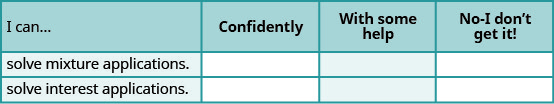
After looking at the checklist, do you think you are well-prepared for the next section? Why or why not?